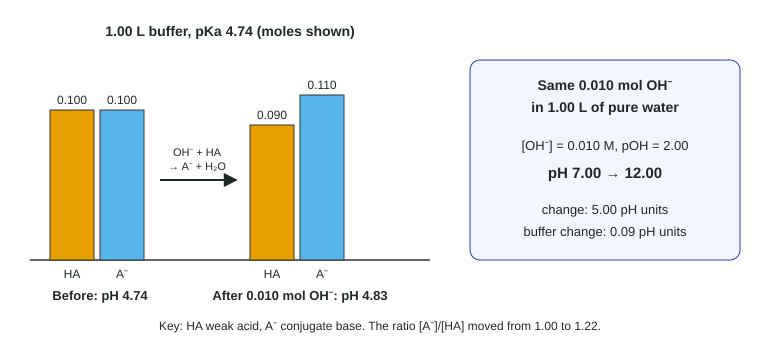

Topic 8.4 defined a buffer: a weak acid and its conjugate base together. This topic explains, particle by particle, why such a mixture resists pH change, and which features of the mixture decide its pH. The short answer has two parts: buffers react with what you add, and their pH depends on a ratio.
What happens when you add acid or base
Picture an acetate buffer: lots of CH₃COOH molecules and lots of CH₃COO⁻ ions (with Na⁺ spectators).
- Add strong acid. The H₃O⁺ ions meet acetate ions and react: H₃O⁺ + CH₃COO⁻ → CH₃COOH + H₂O. This goes essentially to completion (K = 1/Ka = 5.6 × 10⁴). The added acid becomes weak acid, which ionizes only slightly.
- Add strong base. The OH⁻ ions meet acetic acid molecules and react: OH⁻ + CH₃COOH → CH₃COO⁻ + H₂O (K = Ka/Kw = 1.8 × 10⁹). The added base becomes weak base.
In both cases the strong acid or base is replaced by a little more of one member of the pair, and the free H₃O⁺ or OH⁻ never builds up. That is buffer action.
Why the pH moves only a little
From Ka, the buffer's hydronium concentration is
[H₃O⁺] = Ka × [HA]/[A⁻]
An addition changes [HA] and [A⁻] by the same small amount in opposite directions. When both are large, the ratio barely moves, so neither does [H₃O⁺]. The figure puts numbers on it.

Worked example 1: a buffer against water. 0.010 mol NaOH is added to (a) 1.00 L of buffer containing 0.100 mol CH₃COOH and 0.100 mol CH₃COO⁻ (Ka = 1.8 × 10⁻⁵), and (b) 1.00 L of pure water. Find each new pH.
(a) Step 1. Before: [H₃O⁺] = Ka × 0.100/0.100 = 1.8 × 10⁻⁵ M, pH = 4.74.
Step 2. OH⁻ reacts with CH₃COOH: acid 0.100 − 0.010 = 0.090 mol; acetate 0.100 + 0.010 = 0.110 mol.
Step 3. [H₃O⁺] = 1.8 × 10⁻⁵ × 0.090/0.110 = 1.5 × 10⁻⁵ M, pH = 4.83. Change: 0.09 units.
(b) In water the OH⁻ stays free: [OH⁻] = 0.010 M, pOH = 2.00, pH = 12.00. Change: 5.00 units.
The pH depends on the ratio, not the amounts
Because only the ratio [HA]/[A⁻] appears in [H₃O⁺] = Ka × [HA]/[A⁻], two buffers made from the same acid with the same ratio have the same pH, however concentrated they are. A buffer with 0.010 M of each component and one with 1.0 M of each both have pH = pKa. Readers report that many students miss this on buffer questions.
Two consequences:
- Dilution barely changes the pH. Adding water lowers [HA] and [A⁻] by the same factor, so the ratio stays put. (Only at extreme dilution, when water's own ions start to matter, does the pH drift toward 7.)
- In a ratio, moles work as well as concentrations. Both components share one volume, which cancels. That is why the worked example could use moles directly.
Worked example 2: does dilution matter? 50.0 mL of a buffer with 0.20 M HF and 0.30 M NaF (Ka = 6.8 × 10⁻⁴) is diluted to 500.0 mL. Find the pH before and after.
Before. [H₃O⁺] = 6.8 × 10⁻⁴ × 0.20/0.30 = 4.5 × 10⁻⁴ M, pH = 3.34.
After. Both are now ten times more dilute, 0.020 M and 0.030 M. [H₃O⁺] = 6.8 × 10⁻⁴ × 0.020/0.030 = the same, so pH = 3.34.
Unequal amounts: one direction is stronger
A buffer whose two components are equal handles acid and base equally well. If one is larger, the buffer handles additions that react with the larger one better. Blood's carbonic acid / hydrogen carbonate buffer has about 20 times more HCO₃⁻ than H₂CO₃, so it is far better at neutralizing added acid, which is what metabolism mostly produces. How much a buffer can absorb before it fails is the subject of topic 8.10.
Writing the explanation
When asked to explain why a buffer's pH changes only slightly, a full answer names the species and the reaction:
"The added H₃O⁺ reacts with CH₃COO⁻ in the buffer to form CH₃COOH and water. Because the H₃O⁺ is consumed, its concentration stays low, and the ratio [CH₃COO⁻]/[CH₃COOH] changes only slightly, so the pH decreases only slightly."
"The buffer neutralizes the acid" without the species, or "the buffer keeps the pH constant", do not earn the point.